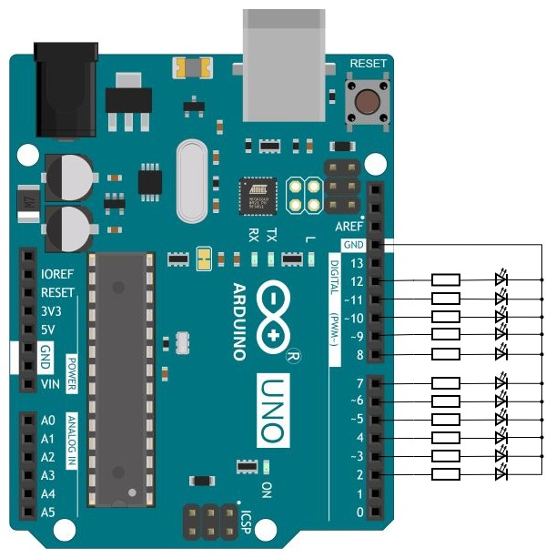

Светодиод подключают к источнику питания через токоограничивающий резистор. Светодиод, подключённый напрямую, горит ярко, но не долго. Сопротивление R токоограничивающего резистора рассчитывают исходя из имеющегося напряжения U питания; тока I через светодиод, который хотят получить; падения V напряжения на горящем светодиоде (зависит от материала светодиода, слабо зависит от тока). Указанные величины связаны соотношением U=IR+V. Для типового индикаторного светодиода, подключенного к цифровому пину Ардуино, без большой ошибки можно взять значения 5 В, 10 мА, 2 В, что даст сопротивление токоограничивающего резистора около 300 Ом. Светодиоды не любят обратного напряжения; если может случиться включение в обратном направлении (минус на аноде относительно катода) при напряжении более 5 В, то следует принимать меры к защите.
Если, не забывая о резисторе, подключить светодиод анодом к пину Ардуино, катодом к земле, то он будет загораться при высоком уровне на этом пине и гаснуть при низком. Другой вариант включения — катодом к пину, анодом к +5 В; в этом случае высокий уровень на пине погасит светодиод, низкий зажжёт. Если к пинам Ардуино подключено несколько светодиодов, то для зажигания или гашения нужного программа должна выставить на нужном пине требуемый уровень, не меняя уровень на остальных пинах.
Светодиоды с токоограничивающими резисторами подключены катодом к пинам 2-12 Ардуино (не обязательно ко всем), анодом к +5 В. На пине уже 13 имеется встроенный светодиод. После старта программы все светодиоды погашены. Программа принимает через Serial из терминала номер пина, состояние которого требуется изменить. Например, если ввести 13 и ENTER, то встроенный светодиод загорится, а если повторить этот ввод, то погаснет; аналогично для пинов 2-13 и светодиодов, к ним подключённых.
Программа реализует способ управления с шагами, в которых:

Текст программы содержится в файле Ind_y_Ardu.ino, который можно получить с Github по ссылке.
Как вариант, можно получить с Github весь репозиторий цикла "Ардуино и индикаторы" и выполнить команду
git restore -s LED_external -- Ind_y_Ardu.ino
Файл Ind_y_Ardu.ino в рабочей области будет перезаписан требуемой версией.